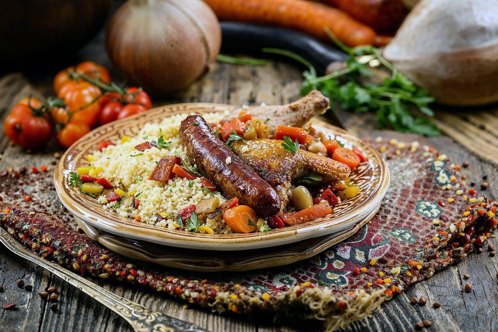

Lasagna

It's what
North African couscous comes in two different grinds of semolina: fine and medium. In Morocco, Tunisia, Libya, and Algeria where couscous originates.
Ingredients
- 1 cup whole wheat couscous
- 1 tablespoon vegetable oil
- 1 medium onion, chopped
- 2 bay leaves
- 5 whole cloves, crushed
- ½ teaspoon cinnamon
- 1 teaspoon ground dried turmeric
- others...
Steps
- Prepare couscous according to package directions.
- Heat oil in a large pot over medium heat.
- Mix carrots and zucchini into the pot.
Home